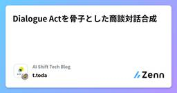

CyberAgent Developers Blog | サイバーエージェント デベロッパーズブログ
https://developers.cyberagent.co.jp/blog
サイバーエージェントのエンジニア・クリエイター・テクニカルクリエイターが執筆する公式ブログです。サイバーエージェントの技術情報を日々発信していきます。
フィード

1ヶ月の Tapple インターンで掴んだ 4 つのこと
CyberAgent Developers Blog | サイバーエージェント デベロッパーズブログ
はじめに はじめまして。金沢工業大学 情報工学科 2 年の高岡己太朗です。 大学では Android ...
4時間前

Dialogue Actを骨子とした商談対話合成
CyberAgent Developers Blog | サイバーエージェント デベロッパーズブログ
本記事では、その実践に向けて、まず実データを分析して見えてきた商談対話の構造的な特徴と、そこから得た ...
1日前
1ヶ月間で「わける」技術を学んだ話
CyberAgent Developers Blog | サイバーエージェント デベロッパーズブログ
はじめに はじめまして！明治大学商学部3年の伊藤汰海です。2026年3月の1ヶ月間、タップルのiOS ...
1日前
AIエージェントの長時間実行で重要なDurable Executionの仕組みとAWS LambdaでのGo SDK実装 2
2
CyberAgent Developers Blog | サイバーエージェント デベロッパーズブログ
ABEMAの広告配信システムのバックエンド開発を担当している黒崎 ( @kuro_m88 )です。 ...
1日前
Liquid Glass 対応 — タップルでの意思決定と実装 1
CyberAgent Developers Blog | サイバーエージェント デベロッパーズブログ
Liquid Glass 対応 — タップルでの意思決定と実装 この記事で学べること ✅ デザイン・ ...
4日前
職域を超えるデザイン – AI時代のデジタルプロダクトデザイン戦略 1
CyberAgent Developers Blog | サイバーエージェント デベロッパーズブログ
AmebaLIFE事業本部のデジタルプロダクトデザインリードの本田です。 今回は、近年我々が取り組ん ...
6日前